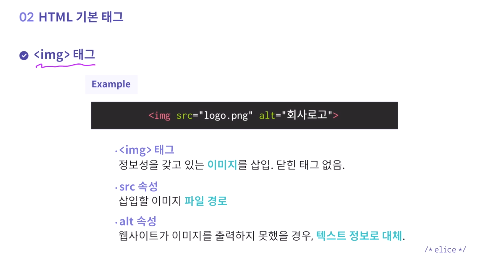

1. 웹 구성 요소
프로그래밍이란?
- 컴퓨터와 소통하는 방법
- 정보 제공 방법 및 제어 방법 결정 가능
- 웹 개발 언어(HTML, CSS, JS)는 브라우저와 소통함
웹 개발 언어의 역할
- HTML - 정보 및 설계도
- CSS - 디자인, 스타일링
- JS - 기능과 효과
웹 제작 고려 사항
- 웹 표준: 공식 표준이나 기술 규격 -> 강제성 띄지 않지만 검색 노출도 높아짐
- 웹 접근성: 장애 여부 상관없이 모두 사용 가능
- 크로스 브라우징: 모든 브라우저 및 기기에서 정상 작동하는지
2. HTML 주요 태그
HTML 태그 구성 요소
Ex) <열린태그 속성 = "속성값">컨텐츠
- 태그명: HTML의 고유 기능 명시
- 컨텐츠: 태그 사이에 담긴 내용물
- 속성: HTML 태그가 지닌 추가 정보
- 속성값: 어떤 역할을 수행할지 구체적인 명령을 진행하는 것
HTML 문서의 기본 구조
- !DOCTYPE html | HTML5라는 신조어로 문서를 선언
- html>.../html> | 문서의 start & end
- head: 웹페이지 요약 정보(hidden)
- meta charset: 문자 코드. 유니코드 사용(UTF-8)
- title: website 제목
- body: explicit(visible) info
img 태그

h 태그
Heading의 약자. 제목/부제목 표현.
숫자는 정보의 중요도.
h1은 문서 당 한번만 사용.
p 태그
paragraph. 본문 내용
ul 태그
unordered list. 순서 없는 리스트.
menu button에 주로 사용.
a 태그
anchor의 약자. 링크로 이동.
href="링크"
target="접근방식(기본 _blank)"
3. 공간 만들기 태그
HTML 태그 구성 요소
- 목차 - header
- 본문 - body
- 부록 - footer
header, nav 태그
- header: 머리글
- nav: 메뉴 버튼 담아 with ul,li,a
main, article 태그
- 보통 main(본문)>article(정보)
- main 태그에 role="main" 속성 넣어줘야 for IE
- article>h# 태그 내 구역 대표 타이플 필수!!
footer 태그
div 태그
4. HTML의 두가지 성격
Block 요소와 Inline 요소
두 요소 구분 특징: 줄바꿈 현상, 가로세로상하 배치 가능 여부
Block 요소
- y축 정렬 형태로 출력
- 공간 설정 가능
- 상하 배치 가능
Inline 요소
- x축 정렬 형태로 출력
- 공간 설정 불가
- 상하 배치 불가
5. Cascading Style Sheet
문서의 레이아웃 및 스타일 정의. HTML을 꾸며줌.
CSS 구성 요소
Ex) 선택자 { 속성 : 속성값; }
- 선택자: 디자인 적용할 HTML 영역
- 속성: 어떤 디자인을 적용할지
- 속성값: 어떤 역할을 수행할지;
속성 Property
font-size, font-family, color, background-color, text_align 등등
CSS 연동 방법
- Inline Style Sheet: ..h1 style="color: red"..
- Internal Style Sheet: ..style> h1{ color: red ; }.. /style>..
- External Style Sheet: [in CSS] h1 { color: red ; }.
[in HTML]..link rel="stylesheet" href="fn.css">
6. CSS 선택자
HTML의 어떤 요소에 CSS를 적용할지. Tag type, class, ID에 따라 적용
선택자
- type - h2 { color: red ;}
- class - [HTML] ..h2 class="sub">.. [CSS] .sub { color: red ;}
- class - [HTML] ..h2 id="sub">.. [CSS] #sub { color: red ;}
속성 Property
font-size, font-family, color, background-color, text_align 등등
CSS 연동 방법
- Inline Style Sheet: ..h1 style="color: red"..
- Internal Style Sheet: ..style> h1{ color: red ; }.. /style>..
- External Style Sheet: [in CSS] h1 { color: red ; }.
[in HTML]..link rel="stylesheet" href="fn.css">
7. 부모 자식 관계
p>ul>li*3^ol>li*2 : p가 부모. ul, ol이 자식. ul과 ol은 형제.
원하는 지역에만 CSS 속성 적용 -> 부모를 표기
Ex) header h1 { color: brown ;}
선택자
- type - h2 { color: red ;}
- class - [HTML] ..h2 class="sub">.. [CSS] .sub { color: red ;}
- class - [HTML] ..h2 id="sub">.. [CSS] #sub { color: red ;}
속성 Property
font-size, font-family, color, background-color, text_align 등등
CSS 연동 방법
- Inline Style Sheet: ..h1 style="color: red"..
- Internal Style Sheet: ..style> h1{ color: red ; }.. /style>..
- External Style Sheet: [in CSS] h1 { color: red ; }.
[in HTML]..link rel="stylesheet" href="fn.css">
8. Cascading
CSS 우선순위 결정 요소
아래 순서대로 우선순위에 놓임:
- 순서 - 더 나중에 적용될수록
- 디테일 - 더 구체적일수록
- 선택자 - style > id > class > type 순으로 superior
속성 Property
font-size, font-family, color, background-color, text_align 등등
CSS 연동 방법
- Inline Style Sheet: ..h1 style="color: red"..
- Internal Style Sheet: ..style> h1{ color: red ; }.. /style>..
- External Style Sheet: [in CSS] h1 { color: red ; }.
[in HTML]..link rel="stylesheet" href="fn.css">
9. CSS 주요 속성
- width: %, px, etc.
- height
- font-family: 디폴트값은 sans-serif
- font-weight: 100~900 숫자 혹은 bold, etc.
- border-style: solid, dotted
border: solid 10px red 이런식으로
style width color 지정 한꺼번에 가능
- background-color: color ;
- background-image: url(이미지 경로) ;
- background-repeat: repeat-x/y, no-repeat ;
- background-position: top, bottom, center, left, right ;
- backgroud: yellow url no-repeat left ;